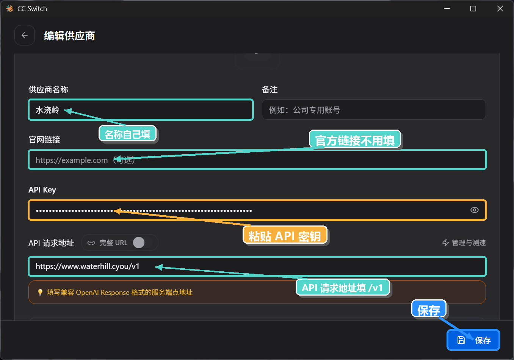
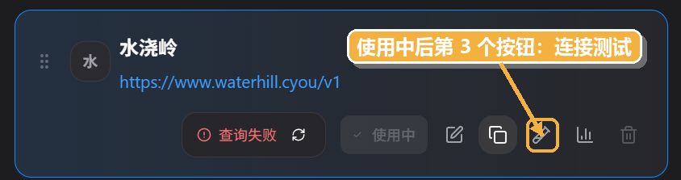
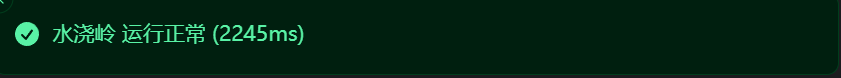

WaterHill + CC Switch + Codex
Codex 接入中转站使用 GPT 教程
按照三步完成配置：先在 WaterHill 中转站创建 GPT 分组密钥，再用 CC Switch 添加 OpenAI 兼容供应商，最后安装 Codex 并切换到刚配置好的供应商。

配置路径
- WaterHill创建 GPT 分组 API 密钥
- CC Switch添加 OpenAI 兼容供应商
- Codex安装后使用该供应商
第一部分
注册 WaterHill 中转站
打开 https://www.waterhill.cyou/， 点击“立即开始”或右上角“登录”都可以进入登录页面。没有账号时点击“注册”，优惠码可以不填。


第一部分
创建 API 密钥、选择分组并复制密钥
进入 API 密钥页面
登录后，在左侧菜单中点击 API 密钥。

点击创建密钥
在 API 密钥页面点击右上角“创建密钥”，准备进入分组选择流程。

选择 GPTfree 和混合分组
进入选择分组页面后，主分组和副分组分别选择 GPTfree 和 混合 即可，一个选 GPTfree，一个选混合。

复制生成的密钥
密钥创建成功后，回到 API 密钥列表，点击复制按钮保存密钥。后面配置 CC Switch 时会用到它。

第二部分
下载 CC Switch
优先打开 CC Switch 官网下载。如果官网无法下载，打开 GitHub Releases 页面，Windows 用户下载
CC-Switch-v3.16.5-Windows-Portable.zip 这个版本。


CC-Switch-v3.16.5-Windows-Portable.zip。第二部分
添加供应商并填写参数
打开 CC Switch，在 OpenAI 或 Codex 相关配置界面中点击右上角“+”添加供应商。名称可以自己填写，
API 请求地址填写 https://www.waterhill.cyou/v1，密钥填写第一部分创建的 WaterHill API 密钥，
模型名称填写 gpt-5.5，官方链接不用填写。


https://www.waterhill.cyou/v1，
模型填写 gpt-5.5；“官方链接”不用填写，完成后保存。
第二部分
连接测试
保存供应商后回到列表，选择“使用中”字符后面的第三个按钮进行连接测试。测试成功后，会出现成功提示。


第三部分
下载 Codex
可以直接在 Microsoft Store 搜索下载 Codex，也可以打开下面的 Microsoft Store 链接安装。

第三部分
开始使用
安装并打开 Codex 后，在输入框里输入任务，需要时选择项目，然后点击发送按钮开始使用。